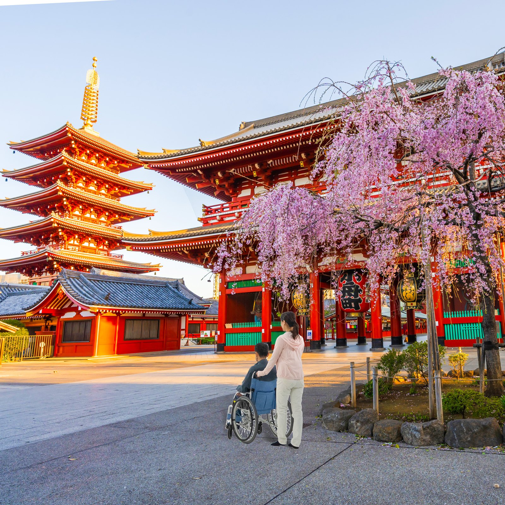

BEFORE THE JOURNEY
01
旅行計画と準備
↗行きたい場所や体験を伺い、移動や宿泊の手続きも確認。必要に応じて主治医と連携し、ご出発前の準備を一緒に進めます。
PLANNING & PREPARATIONMEDICAL TRAVEL COMPANION SERVICE
Make your journey
more comfortable, easier, safer.
日本への旅を、計画から帰国まで。
必要なサポートを、必要なときに。
「行きたい」を、あきらめなくていいように。
移動に不安がある方、医療サポートが必要な方も、日本での旅を楽しめるように。Joyful Journeyは、ご旅行の計画や手配の相談から、旅先での付き添い、医療的なサポートまで一人ひとりに合わせてお手伝いします。
行きたい場所も、過ごし方も、あなたが決める。私たちは安全と快適さを大切に、必要なときに手を差し伸べます。
サポート内容を見る ↓より快適に
MORE COMFORTABLEより容易に
MORE ACCESSIBLEより安全に
SAFER, EVERY STEPご到着からご帰国まで。
必要なサポートを一緒に考えます。
行きたい場所や体験を伺い、移動や宿泊の手続きも確認。必要に応じて主治医と連携し、ご出発前の準備を一緒に進めます。
PLANNING & PREPARATION看護師が旅に同行し、移動や観光をサポート。行程や過ごし方はあなたが決め、必要なときに私たちがお手伝いします。
MEDICAL TRAVEL COMPANION PROFESSIONAL CARE
PROFESSIONAL CARE日本の資格を持つ看護師が、医療ニーズに応じてサポート。ドライバーや医療機関とも連携し、旅の安心を支えます。
PROFESSIONAL MEDICAL SUPPORT
次は、
どこへ行こう。
あなたの状況やご希望を伺い、旅行の工程に合わせてサポートをご提案します。安全で、楽しく、快適な旅になるよう、出発前から一緒に準備します。
行きたい場所、体験したいこと、必要なサポートを伺います。実際に同行する看護師が、事前の相談を担当します。
ご本人の同意のもと、必要な医療情報や空港・航空会社・宿泊施設の手続きを確認します。
ご到着からご帰国まで、決めた行程に合わせて付き添い、必要な場面でサポートします。
旅をされた方から届いた声をご紹介します。
20年以上にわたり、民間看護サービスで多くの方の日々の外出や旅行をサポートしてきました。
旅の経験は、暮らしを豊かにしてくれるもの。旅行が好きな方、日本を訪れたいすべての方に、医療サポートを含めたお手伝いをしたい。その思いから、海外からの旅行者を支えるJoyful Journeyを始めました。
Rifa Kawakami— Joyful Journey Founder
必要なサポートは一人ひとり異なります。医療的なケアを含むご希望を伺い、内容に合わせてご案内します。
私たちは旅行会社ではありません。ご希望に応じて、信頼できる旅行会社と連携したり、移動に必要な車両やプライベートツアーの手配をお手伝いしたりできます。
主にオンラインミーティングでご相談します。実際の旅に同行する看護師が、医療面を含めた必要なサポートを事前に伺います。
宿泊を伴うサポートでは、看護師用の別室をご用意いただきます。24時間のサポートをご希望の場合は、できる限り近いお部屋を手配できるよう調整します。
Joyful Journeyへのご予約はいつでもキャンセルできます。ツアー、交通機関、ホテルなど、各事業者への予約にはそれぞれのキャンセルポリシーが適用されます。
当社では旅行保険を販売していません。旅行の中断や病気・けがに備え、包括的な海外旅行保険への加入をおすすめしています。ご希望があれば、日本の保険会社をご紹介します。
VISA、Mastercardなどの主要なクレジットカードをご利用いただけます。